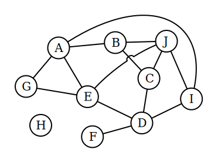

The goal of this exercise is to experiment with a tiny piece of code and try to discover algorithmic improvements.
You've probably heard of the traveling salesman problem: a salesman has a map of different cities some of which are connected buy roads of different lengths and is trying to find the optimal route to reach them all. It is known to be an NP-Hard problem. This exercise is NOT that problem (although it is named in honor of it) -- what we are going to tackle will be called the "Wandering Salesman".
Just as with the Traveling Salesman, we will start with a map of locations, some of which are connected. To give a specific, small example here is a picture we can work with:
In the traveling salesman problem they ask for the shortest route to visit all locations. In the Wandering Salesman problem we will try to find how MANY different routes there are of a given length, starting from a specific starting location.
For example, starting at point F, the salesman can plan four different routes that touch three cities:
Notice that one of these routes goes back on itself -- that's perfectly fine. Also notice that the count is different depending on where you start from. Starting from F gives an unusually low count because there are so few choices for the first step. (The lowest count of all would start from H -- there are zero routes of length 3 that start at H.)
Your assignment is to write a program that will take, as input, a graph, a starting location, and route length. It will count the number of possible routes.
There are a few different ways one might want to input a graph, so to make it easy we are providing an input file that describes the graph pictured above in a couple different formats. The input file is found in small-map.json. This JSON file describes the same map in a few different formats -- use whichever one seems most convenient.
You probably also want to check your work. To support that, we've provided an input file that contains the correct answers for various inputs. The input file is in expected-output.json. This JSON file contains lots of possible information; to start with, consider the "paths" section when verifying your program.